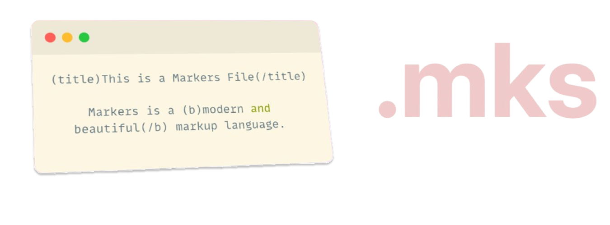

Markers Changelogs

Version 1.0.2
A new Markers version is now available.
This version includes the following features:
- Text Color Tag.
- Bold and Italic text tag.
- Video tag.
- Audio tag.
- Iframe tag.
We have also updated the documentation, Parser and VSCode Extensions.
Version 1.0.1
A new Markers version is now available.
This version includes the following features:
- ABNT Supportive Tags.
- Separator Tag.
We have also updated the documentation, Parser and VSCode Extensions.
We have added an experimental version of the ABNT Parser.
Version 1.0.0
The first version of the Markers Language is now available.
This version includes the following features:
- Text formatting.
- Chapters.
- Links and Images.
- Code blocks.
- Lists.
We have also created the documentation, Parser and VSCode Extensions.
We have added HTML, Markdown and JSON Parsing.
Back to Index
|
GitHub
|
MIT License
|
Changelogs
2025 - Miguel Aguiar. Made with 💚 with Haskell.